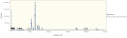
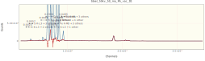

Fitting a Stainless Steel XRF Spectrum
Load the necessary libraries.
using NeXLSpectrum
using Gadfly # For plotting. I've added spectrum support.
using DataFrames, Latexify # For tables.Load the spectra from EMSA files.
path = joinpath(@__DIR__, "XRF Stainless")
# We use map to apply `readEMSA` to each of the files
specs = steel, fe, ni, cr, ti, si, s, sn = map(fn->loadspectrum(joinpath(path, fn)), (
"Steel_50kv_50_ma_Rh_vac_D1.msa",
"Fe_50kv_50_ma_Rh_vac_D1.msa",
"Ni_50kv_50_ma_Rh_vac_D1.msa",
"Cr_50kv_50_ma_Rh_vac_D1.msa",
"Ti_50kv_50_ma_Rh_vac_D1.msa",
"Si_50kv_50_ma_Rh_vac_D1.msa",
"S_50kv_50_ma_Rh_vac_D1.msa",
"Sn_50kv_50_ma_Rh_vac_D1.msa",));| Name | BeamEnergy | ProbeCurrent | LiveTime | RealTime | Coating | Integral | Material |
|---|---|---|---|---|---|---|---|
| Steel50kv50maRhvacD1 | missing | missing | 120 | 131.9 | nothing | 6.536e+06 | missing |
| Fe50kv50maRhvacD1 | missing | missing | 120 | 134.8 | nothing | 7.644e+06 | missing |
| Ni50kv50maRhvacD1 | missing | missing | 120 | 137.7 | nothing | 8.487e+06 | missing |
| Cr50kv50maRhvacD1 | missing | missing | 120 | 131.7 | nothing | 6.578e+06 | missing |
| Ti50kv50maRhvacD1 | missing | missing | 120 | 128 | nothing | 5.087e+06 | missing |
| Si50kv50maRhvacD1 | missing | missing | 120 | 121 | nothing | 1.862e+06 | missing |
| S50kv50maRhvacD1 | missing | missing | 120 | 122.2 | nothing | 2.455e+06 | missing |
| Sn50kv50maRhvacD1 | missing | missing | 120 | 121.5 | nothing | 2.099e+06 | missing |
plot(specs..., xmax=25.0e3,klms=[n"Fe",n"Cr",n"Ni",n"Ti", n"Si",n"S", n"Mo", n"Rh"])
display(plot(steel,xmax=25.0e3, yscale=1.1,klms=[n"Fe",n"Cr",n"Ni",n"Ti", n"Si",n"S", n"Mo", n"Rh"]))
display(plot(steel,xmax=25.0e3, yscale=0.01,klms=[n"Fe",n"Cr",n"Ni",n"Ti", n"Si",n"S", n"Mo", n"Rh"]))
Build the filtered references which will be fit to the steel unknown.
# This Dict defines which is the lowest z element which can be measured for the K, L, M, N shells
firstelm = Dict(KShell=>n"Na", LShell=>n"Zn", MShell=>n"Sm", NShell=>n"Og")
# Build a detector to match the steel spectrum
det = matching(steel, steel[:FWHMMnKa], 120, firstelm)
# Build a 'VariableWidthFilter' top-hat filter to suit the detector
filt = buildfilter(VariableWidthFilter,det)
refdata = (
# ( spectrum, element, material ), # The ordering of `refdata` allows us to splat it into `filterreference(...)`
( fe, n"Fe", mat"Fe" ),
( cr, n"Cr", mat"Cr" ),
( ni, n"Ni", mat"Ni" ),
( ti, n"Ti", mat"Ti" ),
( si, n"Si", mat"Si" ),
( s, n"S", mat"S" ),
( sn, n"Sn", mat"Sn" ),
)
# Some necessary properties are missing from the spectra so provide them.
xtra = Dict{Symbol,Any}(:BeamEnergy=>40.0e3, :ProbeCurrent=>1.0, :Detector=>det)
refs = FilteredReference[]
for rd in refdata
append!(refs, filterreference(filt, rd..., props=xtra))
end
# Merge the missing properties into the unknown too.
merge!(steel, xtra)
res = fit_spectrum(steel, filt, refs, false)
# Tabulate the resultsSteel_50kv_50_ma_Rh_vac_D1| Spectrum | Feature | Reference | K | dK |
|---|---|---|---|---|
| Steel50kv50maRhvacD1 | k[Cr K-L3 + 5 others, Cr] | Cr50kv50maRhvacD1 | 0.2356 | 0.0002151 |
| Steel50kv50maRhvacD1 | k[Fe K-L3 + 1 other, Fe] | Fe50kv50maRhvacD1 | 0.557 | 0.0003218 |
| Steel50kv50maRhvacD1 | k[Fe K-M3 + 3 others, Fe] | Fe50kv50maRhvacD1 | 0.5712 | 0.001038 |
| Steel50kv50maRhvacD1 | k[Ni K-L3 + 1 other, Ni] | Ni50kv50maRhvacD1 | 0.0488 | 0.0001035 |
| Steel50kv50maRhvacD1 | k[Ni K-M3 + 3 others, Ni] | Ni50kv50maRhvacD1 | 0.04948 | 0.0003118 |
| Steel50kv50maRhvacD1 | k[S K-L3 + 3 others, S] | S50kv50maRhvacD1 | 0.005651 | 0.000116 |
| Steel50kv50maRhvacD1 | k[Si K-L3 + 2 others, Si] | Si50kv50maRhvacD1 | 0.002306 | 0.0001139 |
| Steel50kv50maRhvacD1 | k[Sn K-L3 + 1 other, Sn] | Sn50kv50maRhvacD1 | -1.2e-05 | 0.001518 |
| Steel50kv50maRhvacD1 | k[Sn K-M3 + 8 others, Sn] | Sn50kv50maRhvacD1 | -0.001964 | 0.006831 |
| Steel50kv50maRhvacD1 | k[Sn L3-M5 + 26 others, Sn] | Sn50kv50maRhvacD1 | -2.332e-05 | 0.0001949 |
| Steel50kv50maRhvacD1 | k[Ti K-L3 + 3 others, Ti] | Ti50kv50maRhvacD1 | 0.004754 | 4.536e-05 |
Plot the residual spectrum. Note that Mo and Rh were not fit and so there remain significant peaks between 16 and 20 keV.
plot(res)